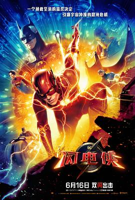

闪电侠 / The Flash
又名：闪电侠：闪点 / Flashpoint
周二半价看的，感觉前后都挺带劲，中间有点瞌睡，没有期望太高，总体来说还挺有意思
作品信息
| 导演 | 安德斯·穆斯切蒂 |
| 编剧 | 克里斯蒂娜·霍德森 / 约翰·弗朗西斯·戴利 / 乔纳森·戈尔茨坦 / 卓比·哈罗德 |
| 主演 | 埃兹拉·米勒 / 本·阿弗莱克 / 迈克尔·基顿 / 萨莎·卡莱 / 迈克尔·珊农 / 玛丽维尔·贝尔杜 / 朗·里维斯顿 / 科雷西·克莱门斯 / 杰瑞米·艾恩斯 / 安婕·特拉乌 / 希尔莎-莫妮卡·杰克逊 / 鲁迪·曼卡索 / 特穆拉·莫里森 / 桑吉夫·巴哈斯卡 / 肖恩·罗杰斯 / 基兰·霍奇森 / 卢克·布兰登·菲尔德 / 伊恩·洛 / 卡尔·柯林斯 / 安多尼·格拉西亚 / 卡蒂亚·伊莉扎洛娃 / 迈克尔·勒曼 / 罗茜·伊德 / 安德斯·穆斯切蒂 / 艾德·韦德 / 格雷戈·洛基特 / 琳恩·法利 / 莎拉·劳恩 / 克里斯托弗·里夫 / 乔治·里弗斯 / 海伦·斯雷特 / 亚当·韦斯特 / 凯恩·艾登 / 朱迪·布莱克特 / 尼古拉斯·凯奇 / 乔治·克鲁尼 / 利亚姆·爱德华兹 / 斯蒂芬·菲切特 / 盖尔·加朵 / 恬伊·基 / 安迪·M·米利根 / 杰森·莫玛 / 埃里克·蒂德 |
| 类型 | 动作 / 科幻 / 奇幻 / 冒险 |
| 制片国家/地区 | 美国 / 加拿大 / 澳大利亚 / 新西兰 |
| 语言 | 英语 / 西班牙语 |
| 上映日期 | 2023-06-16(美国/中国大陆) / 2023-04-25(CinemaCon行业推荐大会) |
| 片长 | 144分钟 |
| IMDb | tt0439572 |
说过什么
2023-06-24 18:42:44
广播 · 看过 · ★★★★☆
周二半价看的，感觉前后都挺带劲，中间有点瞌睡，没有期望太高，总体来说还挺有意思
2022-02-10 06:06:06
广播 · 想看
最后一次看到是 2026-08-01T11:04:48+10:00 · 豆瓣原页